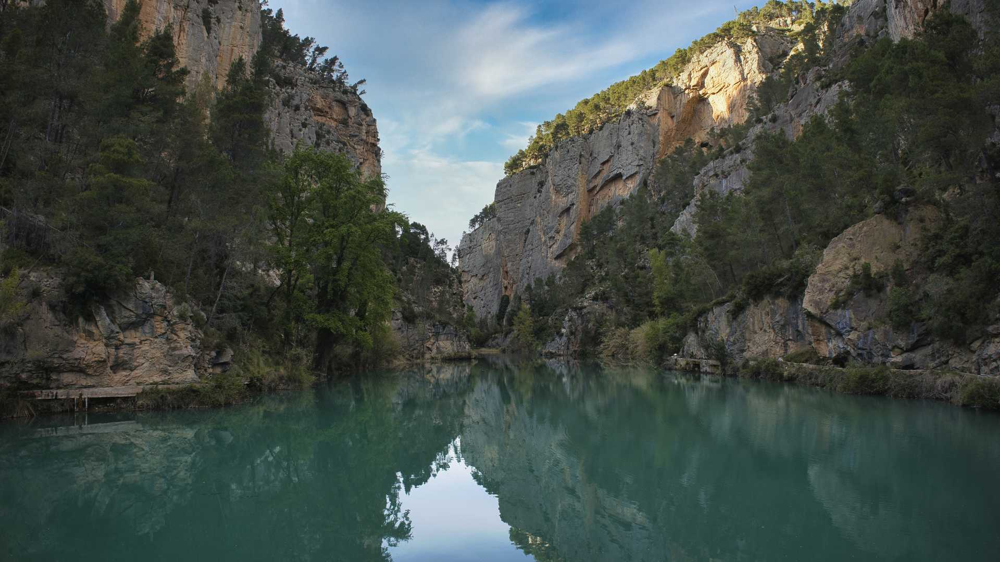

-
LA ALBUFERA
Disfruta de un hermoso atardecer en la Albufera, un lugar perfecto para desconectar y disfrutar de la naturaleza.
-
MONTANEJOS
Relájate en las aguas termales de Montanejos, conocidas por sus propiedades curativas y su belleza natural.
-
REQUENA
Explora la famosa ruta del vino en Requena, donde podrás degustar vinos locales y disfrutar de paisajes encantadores.
-
ADEMUZ
Pasea por los hermosos campos de lavanda en Ademuz, un lugar lleno de color y aroma que te encantará.